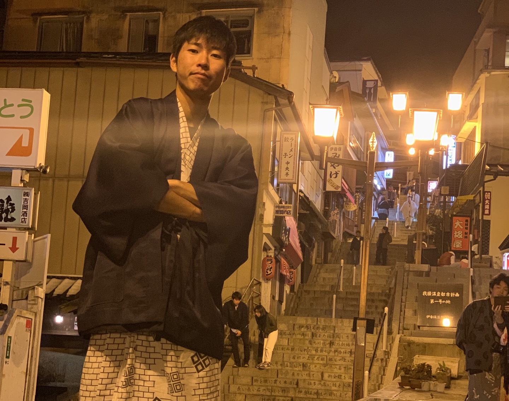

こんにちは!
吉田悦哉です。ご覧くださりありがとうございます。


自己紹介

- 初めまして。吉田悦哉です。
- 1996年5月25日横浜で生まれ育ちました。
- 2015年4月に法政大学法学部に入学、2019年3月に卒業しました。
- 大学ではダンスサークルに入りダンスにのめりこんだ学生生活になりました。
- 社会人になった今でもダンスはつづけており、良い気分転換になってます。
- 現在は、横浜本牧の食品関係の倉庫にて、管理等の仕事をしております。
転職を考えた経緯
- 大学卒業後入社した会社は当時は海外とかかわる仕事がしたいと考えておりました。そこで、物流の業界を選びました。
- しかし、実際は現場の人間が足りていないことから、現場作業ばかりでやりたいことがいつまでもできない状態でした。
- このままでは一生やりたくない仕事をすることになってしまうと考え、自分の本当にやりたいことを考えるようになりました。
意気込み
- 現在は時間を見つけて、HTML、CSSの勉強をしております。
- 周りの友達でプログラミングの知識がある人に教えてもらっております。
- もっと格好いいHPを作成できるようになるため精進します。